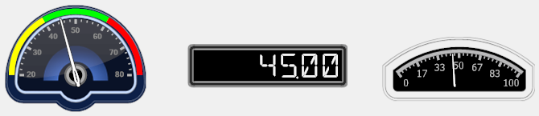
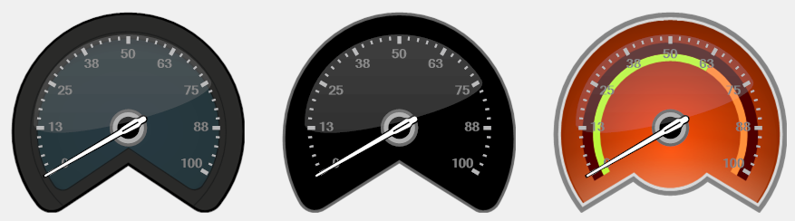

The Gauges category of the Toolbox window provide a number of customizable gauges, which all provide the same properties and behave in a uniform manner, so they can be easily interchanged and configured.
The following screenshot shows three different gauges each displaying the same value:

All gauges provide a BackgroundShapeType property, which allows you to select the style or appearance of this gauge, from the list of available styles.
Tip: Named styles are useful, since once you have selected the required style, you simply need to remember this named style for the other gauges you add to create a consistent look and feel.
The following screenshot show the three gauge of the same type, whose BackgroundShapeType properties are configured differently:

Tip: The gauges also provide the NeedleShapeType and SpindleCapShapeType properties that can further customise their appearance.
If you like you can add colored value ranges to most of the gauge controls, for instance, to help your operators to immediately determine in which general range of values the current value is which needing to study the gauge closely and/or you can also specify the required value limits and/or tick mark intervals.
How to use a gauge to display a value:
this describes the recommended procedure for using a gauge control
to graphically display a value in a graphic form.
If necessary, ensure that you have added the required datasource that contains the value that you want to display.
This value should typically be scaled between 0 and 100.
Tip: Gauges also support logarithmic scaling, via their Logarithmic, LogarithmicBase and CustomLogarithmicBase properties.
If necessary, create the project and the graphic form that you want this gauge to be on.
Add the required gauge control to the
required graphic form. For details, see Adding Gauge controls.
If necessary, specify the required style or appearance of this gauge, by selecting the required named style from the list displayed by the BackgroundShapeType property.
Note: While this list displays the styles of all the gauges, the styles are all prefixed by the names of the specific gauges.
Typically you should only use the styles of the required gauge.
Tip: If desired, you can also configure the NeedleShapeType and SpindleCapShapeType properties to further customise its appearance.
Note: All the gauge controls are located in the Gauges section or category of the Toolbox window.
Configuration options:
A Tasks menu,
displayed when this control is initially added and can be accessed from the
glyph of this control that provides the Configuration link that displays the Configuration configuration dialog.
A right click menu, that provides the Configuration item that displays the Configuration configuration dialog.

 Gauge controls
Gauge controls How to use a gauge to display a value:
this describes the recommended procedure for using a gauge control
to graphically display a value in a graphic form.
How to use a gauge to display a value:
this describes the recommended procedure for using a gauge control
to graphically display a value in a graphic form.